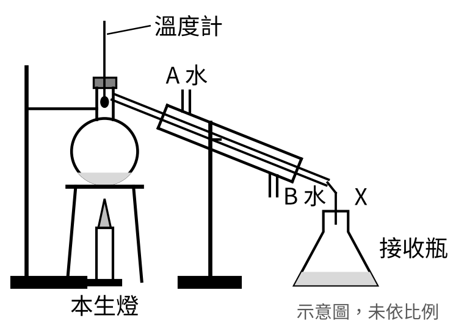
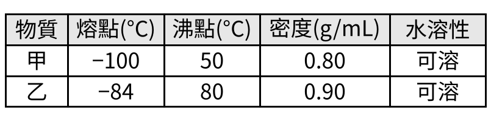
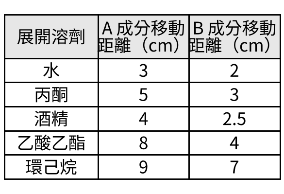
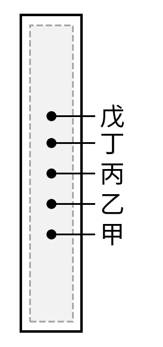
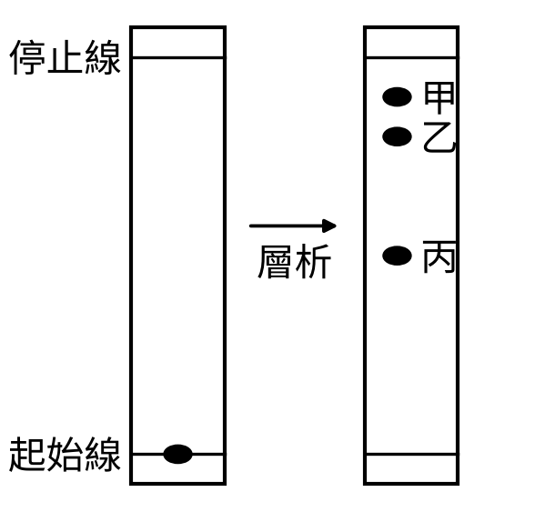
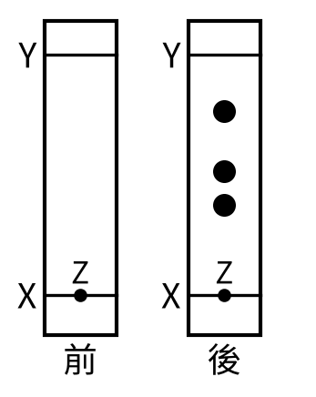
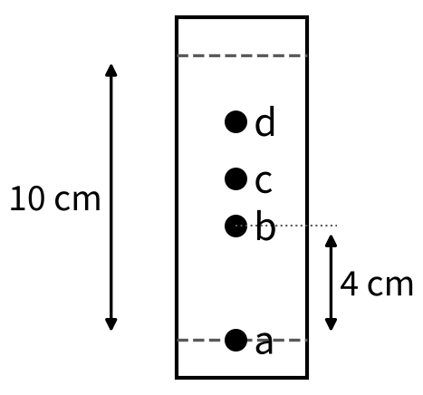
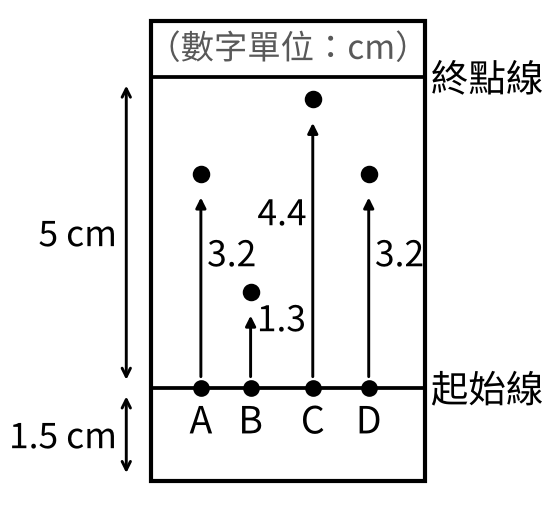
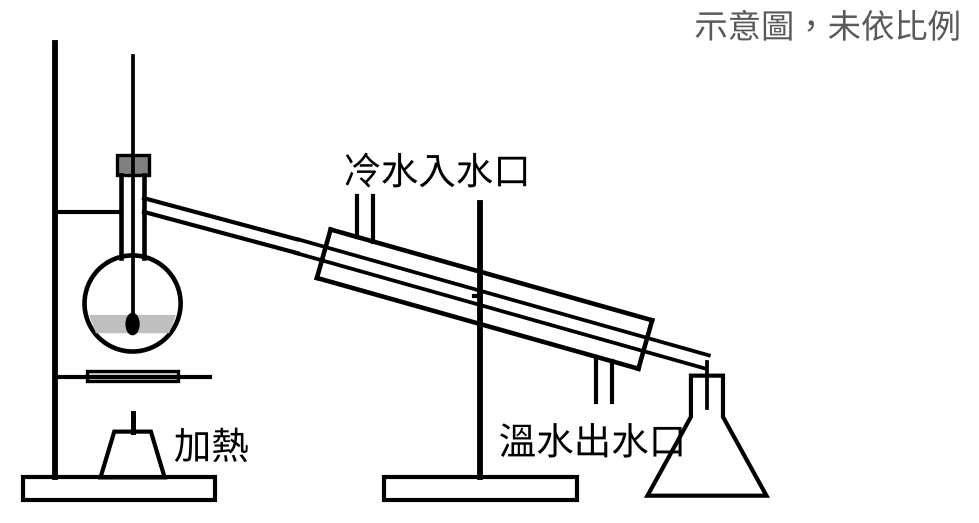
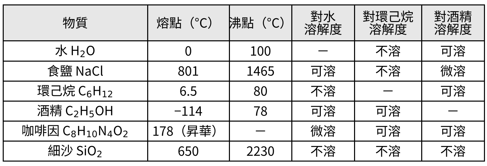

基礎題
若要將磨好的豆漿與豆渣分離，通常會使用紗布或濾網，此種方法是利用物質的哪一種特性不同來分離？
- (A) 粒子大小
- (B) 沸點
- (C) 溶解度
- (D) 密度
- (E) 熔點
看答案與詳解
答案：(A)
對照：沸點⟶蒸餾；溶解度⟶萃取、再結晶；密度⟶傾析、分液。
下列分離純化物質的方法及其原理，何者正確？
- (A) 過濾法：利用物質密度大小不同
- (B) 蒸餾法：利用物質沸點的差異
- (C) 層析法：利用物質顆粒大小不同
- (D) 萃取法：利用欲萃取物在不同但互溶的溶劑中溶解度差異
- (E) 結晶法：利用物質熔點的差異
看答案與詳解
答案：(B)
(B) ✔ 蒸餾看沸點。
(C) ✘ 層析看各成分對固定相與移動相的作用力（吸附力、溶解度）不同。
(D) ✘ 萃取的兩種溶劑必須「互不相溶」。
(E) ✘ 結晶看溶解度（隨溫度的變化）。
下列有關混合物分離的方法與原理，何者錯誤？
- (A) 過濾法——顆粒大小不同
- (B) 蒸餾法——沸點高低不同
- (C) 傾析法——密度大小不同
- (D) 萃取法——吸附力不同
看答案與詳解
答案：(D)
(A)(B)(C) 配對都正確，錯誤的是 (D)。
以滴管取出紫甘藍菜汁，滴 1 滴於濾紙中心，然後逐滴滴加酒精於濾紙中心，結果會在濾紙上呈現數層同心圓的顏色，此一分離菜汁色素的方法稱為：
- (A) 萃取
- (B) 色層分析
- (C) 傾析
- (D) 蒸餾
- (E) 過濾
看答案與詳解
答案：(B)
洗米時，須小心的將洗米水由容器中倒出，以瀝乾水份。此過程與下列那一種分離技術較為相近？
- (A) 過濾
- (B) 層析
- (C) 傾析
- (D) 蒸餾
- (E) 結晶
看答案與詳解
答案：(C)
下列哪些器材不須出現在蒸餾的裝置中？（多選）
- (A) 漏斗
- (B) 冷凝管
- (C) 加熱裝置
- (D) 濾紙
- (E) 蒸餾瓶
看答案與詳解
答案：(A)(D)
漏斗與濾紙是過濾用的器材，蒸餾不需要，選 (A)(D)。
下列那些分離技術，可分離出含有沉澱物之溶液中的液相成分？（多選）
- (A) 過濾
- (B) 層析
- (C) 傾析
- (D) 電解
- (E) 蒸餾
看答案與詳解
答案：(A)(C)(E)
(A) ✔ 過濾：沉澱留在濾紙上，濾液通過。
(B) ✘ 層析是分離溶液中的不同溶質，不是用來分開固液。
(C) ✔ 傾析：讓沉澱沉底後把上層液體倒出。
(D) ✘ 電解會使物質起化學變化，不是分離方法。
(E) ✔ 蒸餾：液體汽化後冷凝收集，固體留在瓶中。
如附圖裝置，以蒸餾法分離食鹽水，何者正確？

- (A) 應在蒸餾管之內管液體流出處 X，加裝橡皮塞使與接收瓶密接，以加快蒸餾速率
- (B) 冷卻水應由 A 處流入，由 B 處流出
- (C) 溫度計應延伸至溶液中，以量取液體溫度
- (D) 蒸餾過程中，溶液的沸點固定
- (E) 圓底燒瓶底部與熱源間應放置陶瓷纖維網以均勻吸熱
看答案與詳解
答案：(E)
(B) ✘ 冷卻水「下進上出」：由下方 B 進、上方 A 出，冷凝管才會充滿水。
(C) ✘ 溫度計球部放在支管口，量的是蒸氣溫度。
(D) ✘ 食鹽水是混合物，水不斷蒸出、溶液變濃，沸點逐漸升高。
(E) ✔ 燒瓶與火焰之間墊陶瓷纖維網，受熱均勻、不易破裂。
下列混合物以及其可選用分離方法的配對，何者正確？
- (A) 分離沙茶醬中的沙茶與油：結晶
- (B) 分離食鹽水中的氯化鈉與水：過濾
- (C) 分離彩色筆顏料中的不同色素可用濾紙色層分析法
- (D) 去除咖啡中的咖啡因可用分餾法
- (E) 分離糖水中的糖與水：萃取
看答案與詳解
答案：(C)
(B) ✘ 氯化鈉溶在水中可通過濾紙，應用蒸發或蒸餾。
(C) ✔ 各色素在濾紙上移動速率不同，可用濾紙層析分開。
(D) ✘ 去除咖啡因用萃取（如超臨界 CO2），不是分餾。
(E) ✘ 糖溶於水，用蒸發（或蒸餾）分離。
現有一瓶含有甲與乙的混合物，有關於甲和乙的某些性質如右表。依據上述性質，可利用下列哪一個方法將其分離？

- (A) 過濾
- (B) 蒸餾
- (C) 層析
- (D) 結晶
- (E) 萃取
看答案與詳解
答案：(B)
兩者沸點相差 80−50＝30 °C ⟶ 用蒸餾依沸點不同分離，選 (B)。
(A) 過濾分固液；(D) 結晶用於固體溶質；(E) 題目沒有合適的萃取溶劑。
欲將咖啡中的咖啡因分離出來，不考慮毒性下，萃取液以下列何者效果最差？
- (A) 丙酮
- (B) 正己醇
- (C) 四氯化碳
- (D) 超臨界 CO2
- (E) 石油醚
看答案與詳解
答案：(A)
(A) ✘ 丙酮與水完全互溶，無法分層，效果最差 ⟶ 選 (A)。
(B)(C)(E) 正己醇、四氯化碳、石油醚都難溶於水，可分層萃取。
(D) 超臨界 CO2 是工業上製造低咖啡因咖啡的萃取劑。
有關各種分離物質的方法，下列敘述哪些正確？（應選 2 項）（多選）
- (A) 混合物的分離可利用各成分物質，在物理性質上的差異進行分離
- (B) 欲分離糖水中的糖與水，可使用過濾法
- (C) 要從海水中萃取微量的溴，可使用酒精作為萃取液
- (D) 要從海水中分離出水，可採用傾析法
- (E) 墨水經過層析，其中各成分會因為與濾紙的吸附力不同，逐一被分離
看答案與詳解
答案：(A)(E)
(B) ✘ 糖溶於水，可通過濾紙，應用蒸發。
(C) ✘ 酒精與水互溶，不能當萃取液。
(D) ✘ 鹽溶在水中，傾析分不開，應用蒸餾。
(E) ✔ 層析利用各成分對濾紙的吸附力不同而分離。
進行某一含 A、B 兩種成分的混合物之薄層層析實驗：取 TLC 片，利用不同的溶劑來展開此一混合物，當展開溶劑上升高度為 10 公分時，記錄兩成分移動距離如下表。 已知在薄層層析實驗中，Rf＝化合物上升高度/溶劑上升高度，可用於進行分離效果的判定，與進行簡單的物質成分鑑定。若想繼續進行管柱層析法，來將此混合物中的兩種成分分離並收集，應該使用哪一種溶劑，可得最佳的分離效果？

- (A) 水
- (B) 丙酮
- (C) 酒精
- (D) 乙酸乙酯
- (E) 環己烷
看答案與詳解
答案：(D)
Rf(A)−Rf(B)：水 0.1、丙酮 0.2、酒精 0.15、乙酸乙酯 0.4、環己烷 0.2。
乙酸乙酯相差最大，選 (D)。
陷阱：不是挑跑最遠的環己烷，而是挑兩成分「相差最多」的溶劑。
進階題
一混合物經濾紙層析後，結果如附圖。若各成分與濾紙間的作用力為 F1，各成分與展開液間的作用力為 F2，則混合物中的哪一種成分之（F2−F1）值最小？

- (A) 甲
- (B) 乙
- (C) 丙
- (D) 丁
- (E) 戊
看答案與詳解
答案：(A)
所以 (F2−F1) 最小的成分移動距離最短，就是最下方的甲，選 (A)。
中秋過後天氣漸涼，吃完 Q 餅後，阿蓉想利用水煎中藥來為自己進補，阿蓉熬煮好中藥材後，將中藥湯小心倒出，使固體的藥材渣留於藥罐之中。請問上述過程牽涉哪些分離物質的方法？（多選）
- (A) 色層分析法
- (B) 萃取
- (C) 過濾
- (D) 傾析
- (E) 結晶
看答案與詳解
答案：(B)(D)
把湯汁小心倒出、藥渣留在罐中 ⟶ 傾析。
過程沒有使用濾紙（過濾）、層析或結晶，選 (B)(D)。
豆漿是國人常用飲品，其製作過程如下： (1) 將黃豆洗淨置入盆中泡水使其膨脹，傾斜盆子將水緩緩倒出 (2) 再用篩子瀝乾水分後，再次將黃豆沖水洗淨後放入果汁機 (3) 加適量水並啟動果汁機，使黃豆汁呈現細綿狀 (4) 將打好的豆汁倒入鍋中，以小火慢煮，過程中需持續攪拌，避免燒焦 (5) 將煮滾的豆汁過篩，即告完成 下列物質純化之技術與上述過程使用到類似者有哪些？（應選 2 項）（多選）
- (A) 蒸餾
- (B) 層析
- (C) 過濾
- (D) 傾析
- (E) 再結晶
看答案與詳解
答案：(C)(D)
步驟 (1) 傾斜盆子讓水緩緩倒出、黃豆留在盆中 ⟶ 傾析。
步驟 (2) 用篩子瀝乾、(5) 過篩去渣 ⟶ 利用顆粒大小分離固液，原理同過濾。
步驟 (3) 打碎、(4) 煮沸都不是分離方法；沒有蒸餾、層析、再結晶。
故選 (C)(D)。
正平做了蒸餾紅色墨水溶液的實驗，下列哪些敘述正確？（應選 3 項）（多選）
- (A) 蒸餾法的原理為利用沸點的不同
- (B) 在蒸餾瓶中會加入泡沸石以防止突沸
- (C) 冷凝管的使用，須讓冷卻水由上方進入
- (D) 收集到的蒸氣經冷凝管冷凝後，主要成分為水
- (E) 蒸餾所得的物質必為純物質
看答案與詳解
答案：(A)(B)(D)
(B) ✔ 加沸石（碎瓷片）防止突沸。
(C) ✘ 冷卻水要「下進上出」，冷凝管才會充滿水。
(D) ✔ 色素不易揮發，餾出液主要是水。
(E) ✘ 若有沸點相近或也會揮發的成分，餾出物不一定是純物質。
下列關於混合物分離的敘述，哪些正確？（應選兩項）（多選）
- (A) 紅糖與細砂的混合物可以使用過濾法分離
- (B) 層析實驗常使用乙酸乙酯與正己烷來作為展開液
- (C) 萃取茶水中的咖啡因可以使用丙酮作為溶劑
- (D) 濾紙色層分析法中，含有展開液的容器不需要密閉
- (E) 使用蒸餾法分離紅墨水可以得知墨水中有幾種色素成分
看答案與詳解
答案：(A)(B)
(B) ✔ 乙酸乙酯、正己烷是層析常用的展開液。
(C) ✘ 萃取劑必須與水不互溶；丙酮與水互溶，不能用（可用二氯甲烷、乙酸乙酯）。
(D) ✘ 展開槽要密閉，讓槽內充滿展開液蒸氣，否則展開液邊爬邊蒸發，分離變差。
(E) ✘ 蒸餾只能把水和色素分開，要知道有幾種色素要用層析。
下列有關色層分析法的敘述，哪些正確？（多選）
- (A) 此為利用物質密度的不同來分離物質的方法
- (B) 物質與移動相間作用力愈大的物質，在濾紙中展開的距離愈遠
- (C) 利用濾紙色層分析法可分離出植物色素的成分
- (D) 濾紙色層分析法一定在真空環境中進行
- (E) 與固定相間作用力愈大的物質，在濾紙中展開的距離愈遠
看答案與詳解
答案：(B)(C)
(A) ✘ 不是利用密度。
(B) ✔ 與移動相作用力大 ⟶ 跟著展開液跑得遠。
(C) ✔ 植物色素（葉綠素、葉黃素…）可用濾紙層析分離。
(D) ✘ 一般環境即可進行，不必真空。
(E) ✘ 與固定相作用力大 ⟶ 被濾紙抓住，跑得近。
下列有關過濾的敘述，哪些是正確的選項？（多選）
- (A) 此法為利用物質粒徑的大小不同來分離物質
- (B) 利用濾紙過濾可分離銅粉與銀粉的混合物
- (C) 減壓抽濾法所使用的漏斗為一般玻璃製的漏斗
- (D) 減壓過濾法所得之濾出物，必為純物質
- (E) 減壓過濾法所得之濾出物，比重力過濾法所得之濾出物乾燥
看答案與詳解
答案：(A)(E)
(B) ✘ 銅粉、銀粉都無法通過濾紙，會一起留在濾紙上，分不開。
(C) ✘ 減壓過濾用的是瓷製的布氏漏斗（配抽濾瓶）。
(D) ✘ 濾出物只是「留在濾紙上的固體」，可能含多種不溶物，不一定是純物質。
(E) ✔ 抽氣把水分抽乾，濾出物較乾燥，速度也較快。
下列何種操作方法會降低薄層色層分析法分離的效果？（多選）
- (A) 濾紙使用前，以少許蒸餾水潤溼
- (B) 以彩色筆，於濾紙兩側畫線做標記
- (C) 濾紙置入燒杯時，接觸到杯壁殘留的食鹽水
- (D) 在濾紙上將欲分離之彩色筆，於同一位置重複劃記兩次
- (E) 不同顏料之彩色筆劃記在濾紙的同一水平線上
看答案與詳解
答案：(A)(B)(C)
(B) ✔ 標記要用鉛筆；彩色筆墨水也會被展開，干擾結果。
(C) ✔ 碰到殘留食鹽水會污染濾紙，展開液沿杯壁不均勻爬升。
(D) ✘ 待乾後在同一點重複點樣可增加樣品量，是正確做法。
(E) ✘ 點在同一條起始線上才能比較移動距離，是正確做法。
小婷將混合染料以濾紙層析法分析，在展開液上升至停止線時終止層析。待濾紙乾燥後，觀察發現甲、乙、丙三種成分之相對位置如圖；並定義 Rf 值如下： Rf 值＝成分由起始線的移動距離／同時間展開液由起始線至停止線的移動距離 Rf 值與該成分及展開液的特性有關，可做鑑定之用。 下列敘述哪些正確？（多選）

- (A) 乙的 Rf 值為 0.2
- (B) 甲與丙的 Rf 值，兩者相加約為 0.6
- (C) 乙與丙在層析時，移動速率比約為 8：5
- (D) 更換溶劑可能會改變甲、乙、丙的移動順序
- (E) 甲、乙、丙的 Rf 值，會隨著展開液移動距離的增加而變大
看答案與詳解
答案：(C)(D)
(A) ✘ 乙約 0.8（0.2 是從停止線往下量的比例）。
(B) ✘ 甲＋丙≈0.9＋0.5＝1.4。
(C) ✔ 同時間內移動速率比＝移動距離比＝Rf 比，乙：丙≈0.8：0.5＝8：5。
(D) ✔ Rf 與展開液性質有關，換溶劑可能改變移動順序。
(E) ✘ 同一展開液中同一成分的 Rf 固定，與展開液跑多遠無關。
佛心羅利用薄層層析（TLC）實驗進行墨水色素的分離，他在 Z 處點上墨水後開始進行薄層層析，附圖為實驗前後之比較圖，下列關於該實驗的敘述，哪些是錯誤的？（多選）

- (A) TLC 片置入燒杯時，展開液液面要淹過 X 線
- (B) 當第一個色素到達 Y 時，立即停止展開
- (C) 移動至 TLC 片愈上方的色素，與展開液的溶解度較差
- (D) 使用不同成分的展開液，分離的效果可能不同
- (E) 由實驗結果推論，該墨水恰好有 3 種不同色素
看答案與詳解
答案：(A)(B)(C)(E)
(A) ✔（錯誤）展開液液面要低於 X 線，否則色素直接溶入展開液。
(B) ✔（錯誤）應在「展開液前緣」到達 Y 時停止，不是看色素。
(C) ✔（錯誤）跑得愈上方的色素，在展開液中的溶解度愈大。
(D) ✘（正確）展開液不同，分離效果可能不同。
(E) ✔（錯誤）Z 處仍有殘留、也可能有重疊或無色成分，不能斷定恰好 3 種。
大考／素養題
古代秦始皇欲成為萬古一帝、不老不死的存在，派人在丹爐中投入不同藥物煉製長生藥。煉製藥物可分為兩步驟：① 在爐中投入藥物並用水煎煮，提煉藥性，② 過濾藥渣後繼續蒸煮，最後會在爐底生成閃亮的塊狀物。請問兩步驟中畫線處分別對應何種原理？
- (A) 蒸餾、蒸發結晶
- (B) 萃取、蒸發結晶
- (C) 昇華、層析
- (D) 層析、蒸餾
- (E) 分餾、萃取
看答案與詳解
答案：(B)
② 濾掉藥渣後繼續蒸煮，水分蒸發，溶質在爐底析出塊狀物 ⟶ 蒸發結晶。
選 (B)。(A) ✘ 沒有收集冷凝液，不是蒸餾。
陷阱：煎藥、泡茶、煮咖啡都是萃取。
有關層析實驗的分離原理，下列敘述哪些正確？（應選 2 項）（多選）
- (A) 無論是濾紙層析、薄膜層析還是管柱層析，皆是利用吸附力不同的原理進行分離
- (B) 藉由計算 Rf 值可以得知化合物的結構
- (C) 薄膜層析的流動相多為純物質
- (D) 與固定相作用力愈大的物質，移動速度愈慢
- (E) 管柱層析的填充物難以回收利用
看答案與詳解
答案：(A)(D)
(B) ✘ Rf 可用來比對、鑑定物質或判斷純度，但無法得知結構。
(C) ✘ 文中薄膜層析的流動相是乙酸乙酯＋正己烷等「混合液」。
(D) ✔ 被固定相抓得愈牢，移動得愈慢。
(E) ✘ 文中說管柱層析的填充物可回收利用。
請問 a、b、c、d 的 Rf 值大小順序為何？

答：
看答案與詳解
答案：d＞c＞b＞a
由圖，離起點由遠到近依序為 d、c、b、a ⟶ Rf：d＞c＞b＞a。
承上題，b 物質的 Rf 值為多少？
答：
看答案與詳解
答案：0.4
將 A、B、C、D 四種色素溶於丙酮中，以毛細管吸取，依序滴在濾紙的起始線上，然後取一燒杯，將濾紙浸泡於少量丙酮中（丙酮液面高度低於起始線），並覆蓋蒸發皿，靜置一段時間。使丙酮上升至終點線，取出風乾，結果如附圖所示。已知 Rf＝化合物移動距離/展開液移動距離，試問下列敘述哪些正確？（多選）

- (A) 濾紙對色素的作用力：C＞A＞B
- (B) 色素 B 的 Rf 值為 0.15
- (C) Rf 值：C＞A＞B
- (D) 色素 A 與色素 D 有相同的 Rf 值，可能為同一種物質
- (E) 丙酮對色素的作用力：C＞A＞B
看答案與詳解
答案：(C)(D)(E)
Rf：A＝3.2/5＝0.64，B＝1.3/5＝0.26，C＝4.4/5＝0.88，D＝3.2/5＝0.64。
(A) ✘ 跑得愈遠，濾紙作用力愈小，應為 B＞A＞C。
(B) ✘ B 的 Rf＝0.26。
(C) ✔ 0.88＞0.64＞0.26。
(D) ✔ Rf 相同，可能為同一物質。
(E) ✔ 跑得愈遠，與丙酮（展開液）的作用力愈大。
陷阱：分母是 5 cm，不要加 1.5 cm。
下圖為並非完全正確的蒸餾裝置，請指出錯誤之處，並簡要說明之。

錯誤 1：
錯誤 2：
錯誤 3：
看答案與詳解
答案：見詳解
(2) 冷凝管的水流方向接反：冷水應由下方（靠錐形瓶端）進入、溫水由上方流出，冷凝管才能充滿冷水。
(3) 溫度計插入液體中：溫度計底部應置於蒸餾瓶支管口（蒸氣出口）處，量的是餾出蒸氣的溫度。
下表為一些不同物質的各項性質（「－」表示無此數據）。混合物的分離是利用混合物中各成分物理性質的不同，使用適當的實驗方法來將其中特定組成分離的過程，例如蒸餾法可用來將混合物中沸點較低的物質分離出，萃取則是利用對兩個不互溶的溶劑之溶解度差異，將特定成分由原本的溶劑中萃出的方法。 請參考題幹中各物質的性質，設計一實驗流程，將一杯含有細沙、水、食鹽、酒精與咖啡因的混合物中各種成分加以分離，以得到各成分物質（需要收集到每種組成的成分），請將操作順序依：(1) 以［分離方法］分離出［成分］、(2) 以［分離方法］分離出［成分］……的方式表示，總共 4 個步驟將四種物質分離。

(1)
(2)
(3)
(4)
看答案與詳解
答案：見詳解
(1) 細沙不溶於水與酒精 ⟶ 過濾，濾紙上得細沙。
(2) 濾液含水、酒精、食鹽、咖啡因；酒精沸點 78 °C 最低 ⟶ 蒸餾，先收集酒精。
(3) 剩下食鹽與咖啡因的水溶液；咖啡因可溶於環己烷、食鹽不溶，且環己烷與水不互溶 ⟶ 加環己烷萃取咖啡因（須先除去酒精，因環己烷可溶於酒精）。
(4) 剩下食鹽水 ⟶ 蒸餾收集水，蒸餾瓶中留下食鹽。
另解：(3) 先蒸餾收集水，剩下食鹽與咖啡因固體；(4) 加熱使咖啡因昇華（178 °C）而與食鹽分離。